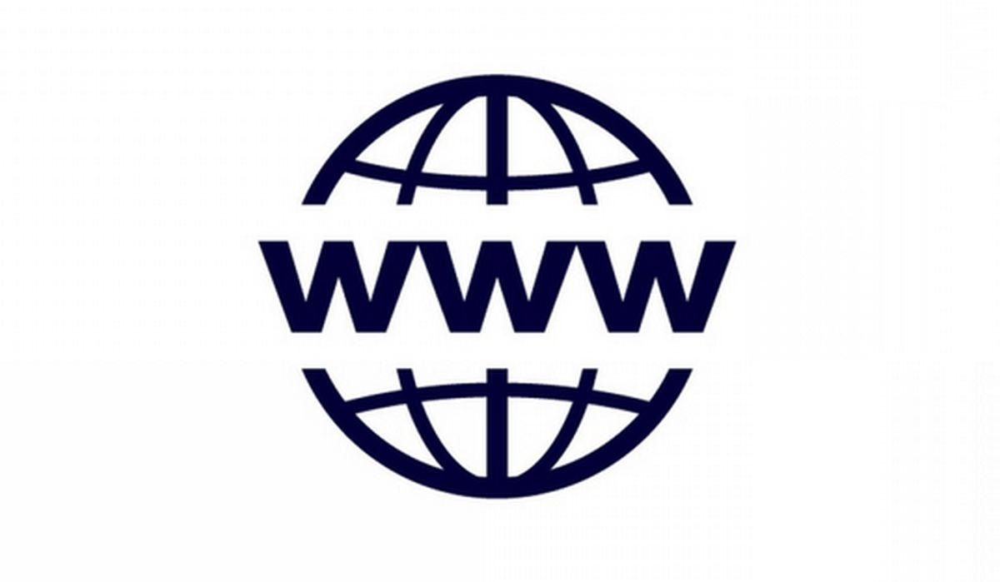

| Evolución de las aplicaciones Web |
| Hitos |
Hechos |
Imagenes |
| Internet |
- La Unión Soviética lanza el Sputnik, lo que lleva al gobierno de los Estados Unidos a establecer la Agencia de Proyectos de Investigación Avanzada (ARPA), precursora de DARPA.
- J.C.R. Licklider de ARPA propone la idea de una "red galáctica" interconectada de computadoras.
- Se establece ARPANET, considerada el precursor de internet, conectando computadoras en la Universidad de California, Los Ángeles (UCLA) y el Instituto de Investigación de Stanford (SRI).
- Ray Tomlinson envía el primer correo electrónico.
- Se celebra la primera demostración pública de ARPANET en la International Conference on Computer Communication.
- Se desarrolla el protocolo de transferencia de archivos (FTP) por Abhay Bhushan.
- Se establece el protocolo TCP/IP, que se convierte en el estándar para la comunicación en internet.
|
|
| Web 1.0 |
- Tim Berners-Lee inventa la World Wide Web (WWW) y desarrolla el primer navegador web, así como el lenguaje HTML.
- Se lanza el primer servidor web fuera de Europa y Norteamérica en el CERN, impulsando la expansión global de la web.
- Se desarrolla el primer navegador web gráfico, Mosaic, en la Universidad de Illinois en Urbana-Champaign.
|
 |
| Web 2.0 |
- Se lanza Yahoo! como un directorio de sitios web.
- Se lanza Windows 95 con soporte para TCP/IP integrado, lo que impulsa la adopción de internet entre los usuarios de PC.
- Se funda Google.
- Se lanza Napster, el primer servicio de intercambio de archivos peer-to-peer.
- Wikipedia se lanza como una enciclopedia en línea editada por la comunidad.
|
 |
| Web 3.0 |
- Se lanza Facebook, inicialmente como una red social para estudiantes universitarios.
- Se lanza YouTube, permitiendo a los usuarios compartir vídeos en línea.
- Se lanza reddit.
- Twitter se lanza al público.
- Se introduce HTML5, proporcionando nuevas capacidades multimedia y deinteracción.
- Se popularizan las aplicaciones web progresivas (PWAs), que ofrecen una experiencia similar a las aplicaciones nativas.
- Se lanza WhatsApp Web, permitiendo a los usuarios acceder a WhatsApp a través de un navegador web.
|
 |
| Web 4.0 |
- Se implementa GDPR (Reglamento General de Protección de Datos) en la Unión Europea, introduciendo reglas más estrictas sobre la privacidad de los datos en línea.
- La pandemia de COVID-19 impulsa la dependencia de internet para el trabajo remoto, la educación en línea y el entretenimiento en casa, acelerando las tendencias hacia la digitalización y la adopción de apps web.
- Se lanza el protocolo HTTP/2, que mejora el rendimiento y la seguridad de las conexiones web.
|
 |